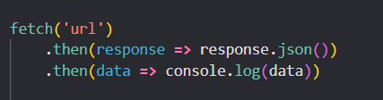
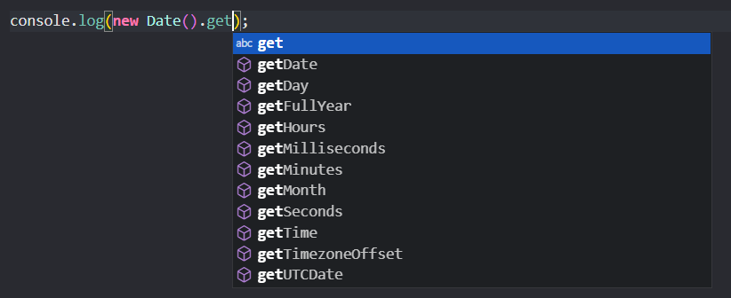

A fetch request is a type of web request that is used to retrieve resources such as HTML pages, images, or data from a server using the HTTP protocol. It is commonly used in client-side web development to interact with APIs and fetch data asynchronously from the server.
In JavaScript, you can get the current date using the Date object.
if you use the Date() function you will get output like this Sat Mar 25 2023 23:26:23 GMT+0100
If you want to get more specfic date you can use the built in get method.
